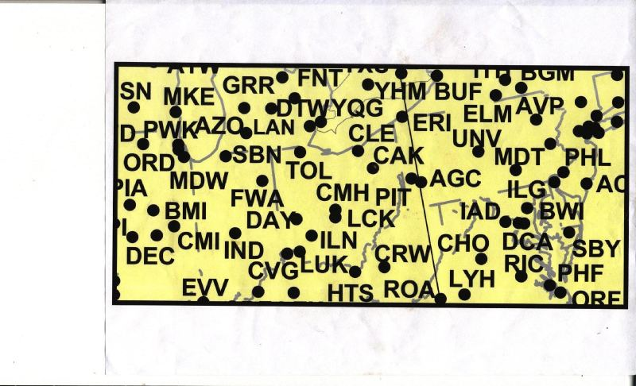

Flight 175 was duplicated: Threefold Confirmation
Tuesday, October 06, 2009
As I've shown in the last blog entry, the ACARS radio messages sent from United Airlines dispatchers to Flight 93 are clear evidence that the plane was over Fort Wayne, Indiana and later Champaign, Illinois when it received its last messages. This doesn't mean that the "official" Flight 93 which turned around over Cleveland didn't exist; there is plenty of FAA material showing that it did exist. Hence the conclusion that United Airlines tracked a different Flight 93 than the FAA is inevitable - a case for duplicated planes and 9/11 being an Operation Northwoods-like maneuver.
Likewise, United dispatchers sent ACARS messages to Flight 175 locating it near Harrisburg, Pennsylvania just when the South Tower was hit (by whatever plane) and near Pittsburgh 20 minutes later. Hence the Flight 175 that was tracked by United Airlines was not identical to the plane that hit the South Tower.
Before featuring the ACARS messages in particular, I'd like to repeat why it's possible to deduce the approximate position of a plane by means of the transmitting ground station that is attached to each message:
Mr. Winter explained the Aircraft Condition and Reporting System ACARS uses radio ground stations (RGS) at various locations throughout the United States for communication. The messages from the aircraft utilize the RGS in a downlink operating system. A central router determines the strongest signal received from the aircraft and routes the signal/message to UAL flight dispatch.
In other words: if the message denotes (for example) PIT, this means that the Pittsburgh RGS has received the strongest signal and that the plane is in the vicinity of Pittsburgh (usually up to 70 miles, depending on the distance to other RGS's). A map of the RGS's of the relevant part of the United States is here:

Now to the ACARS messages. They have generously been scanned and published by Mike Williams of 911myths.com:http://www.911myths.com/images/8/82/Team7_Box13_UAL_ACARS.pdf
I have transcribed them and added brief comments. The crucial informations are highlighted in red. The last three letters in the fourth line denote the active RGS, and the last line denotes the date and time which is given in zulu format (09111259 = September 11th, 8:59 EDT).
At 8:59, United aircraft maintenance employee Jerry Tsen sent an ACARS message to Flight 175 via the radio ground station MDT (Harrisburg), indicating that the plane was near Harrisburg, not New York.
DDLXCXA SFOLM CHI58R SFOFRSAM
.SFOLMUA 111259/JER
CMD
AN N612UA/GL MDT
- QUSFOLMUA 1UA175 BOSLAX
I HEARD OF A REPORTED INCIDENT ABOARD YOUR ACFT. PLZ VERIFY ALL
IS NORMAL....THX 777SAM
SFOLM JERRY TSEN
;09111259 108575 0543
At 9:03, United flight dispatcher Ed Ballinger sent an ACARS message to Flight 175 when it was still in the vicinity of Harrisburg - exactly when another plane (later believed to be Flight 175) crashed into the WTC South Tower:
DDLXCXA CHIAK CH158R
.CHIAKUA 111303/ED
CMD
AN N612UA/GL MDT
- QUCHIYRUA 1UA175
BOSLAX- MESSAGE FROM CHIDD -
HOW IS THE RIDE. ANY THING DISPATCH CAN DO FOR YOU...
CHIDD ED BALLINGER
;09111303 108575 0545
Also at 9:03, United flight dispatcher Sandy Rogers sent another ACARS message to Flight 175.
DDLXCXA CHIYR CH158R
.CHIYRUA 111303/AD
CMD
AN N612UA/GL MDT
- QUCHIYRUA 1UA175 BOSLAX
- MESSAGE FROM CHIDD -
NY APROACH LOOKIN FOR YA ON 127.4
CHIDD AD ROGERS
;09111303 108575 0546
Finally, at 9:23, Ed Ballinger sent the last ACARS message to Flight 175. The message was received while the plane was near Pittsburgh (PIT). This was 20 minutes after the South Tower was hit.
DDLXCXA CHIAK CH158R
.CHIAKUA DA 111323/ED
CMD
AN N612UA/GL PIT
- QUCHIYRUA 1UA175 BOSLAX
- MESSAGE FROM CHIDD -
/BEWARE ANY COCKPIT INTROUSION: TWO AIRCAFT IN NY . HIT TRADE C
NTER BUILDS...
CHIDD ED BALLINGER
;09111323 108575 0574
The existence of the "official" Flight 175 is undoubtedly substantiated by FAA documents (ATC/pilot transcripts etc.) So like Flight 93, United Airlines tracked a different Flight 175 than the FAA. Another case of plane duplication. And for Flight 175 there is strong additional evidence that the plane was duplicated from start:
- two planes identifiable as United 175 took off from Logan ; one at 8:14 (the official one) and one at 8:23 (this one with tail number N612UA).
- the impossible phone call out of United 175: Peter Hanson, who was aboard the plane, called his father Lee Hanson at 9:00:03 through a satellite-based GTE airphone. The call lasted 192 seconds, hence ending at 9:03:15, 4 seconds after a plane later believed to be Flight 175 hit the South Tower (9:03:11, according to seismic data). With the detection of a second Flight 175, the phone call suddenly makes sense.
Disregarding the ACARS messages, the recordings of GTE phone calls, and the statement of US Airways pilot Steven Miller who observed United 175 taking off from Boston just before himself, is not an option.
The alternative explanation is straightforward and yields a consistent flight path: United 175, tail number N612UA, took off from Boston at 8:23. Peter Hanson talked with his father from 9:00 to 9:03 when the plane was in the skies over Harrisburg. It continued to fly westbound und was near Pittsburgh when it received its last message at 9:23. It is not clear yet what happened to this United 175 afterwards.
It is clear, however, that the "official" United 175 tracked by the FAA was a different plane. The research will continue.
{kind=link}